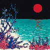
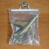
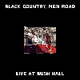

My Music Catalogue
Click on a table header to sort by that category.
| Art | Album | Artist | Year | Rating | Thoughts | Owned on |
 |
Tidal | Fiona Apple | 1996 | 8.5/10 |
An astounding debut album from one of the greatest artists of all time IMO. It's unbelievable to me that she released such a classic at only 18 years old, already having mastered songwriting with a level of depth and maturity that most don't reach at all within their lifetimes.Favorite Tracks: Shadowboxer, Slow Like Honey, The Child Is Gone |
Digital |
 |
When The Pawn... | Fiona Apple | 1999 | 10/10 |
One of my favorites of all time for sure. Every song on this album hits so incredibly hard one way or another. Fiona's songwriting, vocals, and piano playing are all flawless as always, and Jon Brion's theatrical production elevates it to a legendary album that I constantly find myself coming back to.Favorite Tracks: All of them |
Vinyl |
| Extraordinary Machine | Fiona Apple | 2005 | 8/10 |
A very solid and extraordinarily fun album. Not much to say about it. The individual tracks are all awesome on their own, but looking at the album as a whole it feels a little bit lacking in comparison with her previous album, hence the docking of a couple points.Favorite Tracks: Extraordinary Machine, Get Him Back, Better Version of Me, Tymps, Oh Well, Not About Love, Waltz (Better Than Fine) |
Digital | |
 |
The Idler Wheel... | Fiona Apple | 2012 | 9/10 |
This album marks a shift in Fiona's discography from bold heavy-hitting theatrics to more stripped-back and percussive tracks with a much larger focus on songwriting. The lack of theatrical production does nothing to impact the intensity conveyed by the album (although I do miss the fun of it somewhat!)--her songwriting and vocal performances have evolved to the point that she simply doesn't need it anymore.Favorite Tracks: Every Single Night, Daredevil, Jonathan, Left Alone, Anything We Want, Hot Knife, Largo |
Vinyl |
| Fetch The Bolt Cutters | Fiona Apple | 2020 | 9/10 |
A wonderfully experimental album that builds off the direction Fiona went in with The Idler Wheel. Many of the songs on this album don't feature piano at all, unlike her previous albums, but rather focus on unconventional percussion and vocals. It took a bit to get used to, but it really grew on me and I'd consider it one of Fiona's best.Favorite Tracks: I Want You To Love Me, Shameika, Relay, Rack of His, Newspaper, Ladies, Cosmonauts, On I Go |
Digital | |
 |
Masterpiece | Big Thief | 2016 | 7/10 |
A strong debut garage-rock album. Adrianne's beautiful songwriting and knack for catchy melodies make Masterpiece a pleasure to listen through. "Vegas" is slightly boring to me, and "Interstate" & "Parallels" feel a bit underdeveloped, but otherwise it's a very enjoyable album.Favorite Tracks: Masterpiece, Real Love, Paul, Humans, Randy |
Vinyl |
| Capacity | Big Thief | 2017 | 7/10 |
A very good follow-up to their debut. The instrumentals are much less heavy on this one, with more ethereal vocals set over smooth guitar tones and relaxed percussion. I still find a few tracks like "Coma" and "Black Diamonds" a little underdeveloped, but it's overall a very pretty-sounding album that clicks together with Adrianne's songwriting nicely.Favorite Tracks: Shark Smile, Watering, Great White Shark, Objects, Haley |
Digital | |
 |
U.F.O.F. | Big Thief | 2019 | 8/10 |
A beautifully produced indie folk album with light vocals and celestial guitar instrumentation. Adrianne's songwriting takes a more abstract direction, with beautiful and oftentimes harrowingly evocative imagery. The track "Jenni" is somewhat repetitive and doesn't fit very well on the album, but everything else about it is magical.Favorite Tracks: UFOF, Cattails, Open Desert, Orange, Century, Magic Dealer |
Digital |
 |
Two Hands | Big Thief | 2019 | 8/10 |
A more grounded and acoustic sister album to UFOF. I was initially put off by the sort-of unconventional vocals and production of "The Toy", "Those Girls", and "Cut My Hair", but I grew to enjoy it. The album as a whole is a very nice listen.Favorite Tracks: Forgotten Eyes, Two Hands, Shoulders, Not, Replaced |
Digital |
 |
Dragon New Warm Mountain I Believe In You | Big Thief | 2022 | 10/10 |
My favorite folk album ever. Big Thief draws influences from country, bluegrass, Americana, and even trip-hop, trap, shoegaze, and psychadelic music throughout this sprawling 20-track album with songwriting that beautifully captures everything it means to be human. Adrianne's vocals match the instrumentation perfectly as well. It's silly, heartbreaking, ethereal, intimate, strange, and filled to the brim with pure joy.Favorite Tracks: Time Escaping, Spud Infinity, Certainty, Dragon New Warm Mountain I Believe In You, Sparrow, Blurred View, Red Moon, No Reason, Simulation Swarm, Love Love Love, Blue Lightning |
Vinyl |
| Hours Were the Birds | Adrianne Lenker | 2014 | 7/10 | Digital | ||
| a-sides and besides | Adrianne Lenker | 2014 | 7/10 | Digital | ||
| abysskiss | Adrianne Lenker | 2018 | 6/10 |
i'm conflicted about this one. adrianne's songwriting is nice, but the album as a whole feels more like a very-polished collection of demos than a set of complete songs. i might have to give it a few more tries.favorite tracks: symbol, blue and red horses |
Digital | |
 |
songs | Adrianne Lenker | 2020 | 9.5/10 |
mwah mwah mwah beautiful. i don't really know what to say about this album other than that it feels both completely otherworldly/angelic and incredibly intimate/familiar. the lyrics and instrumentation are so evocative in a way i can't put into words.favorite tracks: two reverse, ingydar, anything, forwards beckon rebound, heavy focus, dragon eyes |
Vinyl |
| i won't let go of your hand | Adrianne Lenker | 2024 | 7.5/10 |
a beautiful set of voice-memo demos. this album is only available thru purchase on Bandcamp, and the proceeds go to the PCRF so I really encourage buying it.favorite tracks: the music, fangs lungs ankles, i won't let go of your hand, someone to |
Digital | |
 |
Bright Future | Adrianne Lenker | 2024 | 9/10 |
Adrianne is a legendary songwriter and lyricist, and this album makes that abundantly clear. While her previous studio album songs was much more atmospheric and abstract, Bright Future is direct and soul-baring in its lyrics. I personally prefer the previous album's style, but Bright Future is still a wonderful set of songs.Favorite Tracks: Sadness as a Gift, Fool, Free Treasure (the most beautiful love song I've ever heard), Evol, Already Lost, Donut Seam, Once a Bunch |
Vinyl |
|  | the first glass beach album | glass beach | 2019 | 7.5/10 |
a bit inconsistent at times, but very ambitious and fun. if jeff rosenstock was a gay indietronica artist basicallyfavorite tracks: classic j dies and goes to hell part 1, bedroom community, bone skull, glass beach, yoshi's island, orchids |
Vinyl |
 |
plastic death | glass beach | 2024 | 8.5/10 | Digital | |
 |
LUSH | Mitski | 2012 | 7/10 | Digital | |
 |
Retired from Sad, New Career in Business | Mitski | 2013 | 7/10 | Digital | |
 |
Bury Me At Makeout Creek | Mitski | 2014 | 8.5/10 | Digital | |
 |
Puberty 2 | Mitski | 2016 | 8/10 | Digital | |
| Be The Cowboy | Mitski | 2018 | 8/10 | Vinyl | ||
 |
Laurel Hell | Mitski | 2022 | 7/10 | Vinyl | |
 |
The Land Is Inhospitable and So Are We | Mitski | 2023 | 8.5/10 | Vinyl | |
| Diamond Jubilee | Cindy Lee | 2024 | 8/10 | Digital | ||
 |
Everything Is A Lot | Will Wood And The Tapeworms | 2015 | 7.5/10 |
Will is genuinely an incredible lyricist and piano player and I think that shines through the most in this album, with it's generally-more-stripped-back approach in comparison with his others. In my opinion Will doesn't do theatricality as well as other comparable artists (BCNR, Fiona Apple, Tom Waits, etc) because he leans too much into a pop direction with his songwriting. His more mellow singer-songwriter piano driven tracks here are so beautifully done, and I wish that was the direction he took moving out of his debut. Some of the theatrical ones are still very fun though.Favorite Tracks: 6up 5oh Cop-Out; Skeleton Appreciation Day; Aikido (Neurotic / Erotic); White Knuckle Jerk; Red Moon; Lysergide Daydream; Jimmy Mushrooms' Last Drink |
Vinyl |
 |
SELF-iSH | Will Wood And The Tapeworms | 2016 | 6.5/10 | Digital | |
 |
The Normal Album | Will Wood | 2020 | 7/10 | Vinyl | |
 |
"In case I make it," | Will Wood | 2022 | 7/10 |
I've always loved Will's more mellow songs, and this album has some of his best. But there are a few too many tracks that feel like filler (BFB's, You Liked This) or just self-indulgently ironic/insincere (Sex, Drugs, Rock 'n' Roll; The Main Character (as much as I like the song)) to rank it as high as EIAL.Favorite Tracks: Tomcat Disposables; Euthanasia; Falling Up; That's Enough, Let's Get You Home; Um, It's Kind Of A Lot; Against The Kitchen Floor |
Vinyl |
| For the first time | Black Country, New Road | 2021 | 8.5/10 | Digital | ||
|  | Ants From Up There | Black Country, New Road | 2022 | 9/10 | Digital | |
|  | Live At Bush Hall | Black Country, New Road | 2023 | 8/10 | Vinyl | |
 |
OK Computer | Radiohead | 1997 | 9.5/10 |
Enough has already been said about this album. I wanna give it a 10 so badly, but to be honest I'm just not a big fan of "Climbing Up The Walls" or "The Tourist" and I don't think I can give a ten to an album if there are songs I don't like on it. It sucks because they're not bad songs in the slightest, they just don't appeal to me personally. It's otherwise a perfect album.Favorite Tracks: Airbag, Paranoid Android, Subterranean Homesick Alien, Let Down, Electioneering, No Surprises |
Vinyl |
 |
In Rainbows | Radiohead | 2007 | 9/10 | Digital | |
 |
Magnolia Electric Co. | Songs: Ohia | 2003 | 9.5/10 |
An almost-perfect country album. Jason Molina's voice is so expressive and unique and it matches the really solid feel to the instrumentals. It feels so heavy yet restrained in a way that perfectly reflects Molina's hard-hitting wistful lyricism. Everything from the production to the writing feels decades ahead of its time. I do find the Peoria Lunch Box Blues singer's voice a little annoying, and the song feels a little unnecessary in the context of the rest of the album, but I still enjoy it.Favorite Tracks: Farewell Transmission, I've Been Riding With the Ghost, The Old Black Hen, John Henry Split My Heart, Hold On Magnolia, Whip-Poor-Will |
Digital |
| In the Aeroplane Over the Sea | Neutral Milk Hotel | 1998 | 9/10 | Vinyl | ||
| Twice Around the Sun | Ugly | 2024 | 7.5/10 | Digital | ||
 |
Helplessness Blues | Fleet Foxes | 2011 | 9/10 | Vinyl | |
| Hotel La Rut | Joanna Wang | 2024 | 8/10 | Digital | ||
 |
Blue | Joni Mitchell | 1975 | 8/10 | Digital | |
| Hejira | Joni Mitchell | 1976 | 9/10 | Digital | ||
| Twin Fantasy (Face to Face) | Car Seat Headrest | 2018 | 9/10 | Digital |